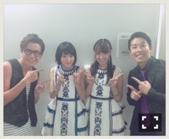
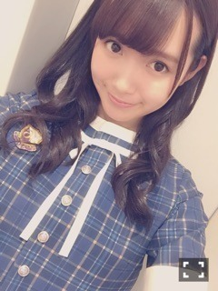
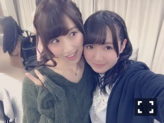
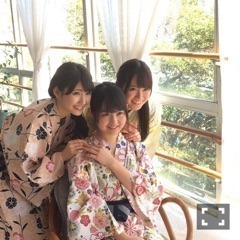

| 2016/07 30 Sat | ひめたん-0o0-その658 |

Mステ！！
観てくださった皆さん
ありがとうございました！
オリメンとして出演するのは
今回が初めてだったので
それだけでも嬉しかったのに
いつからじらー！で言ってた
RADIO FISHさんと
音楽番組で共演するってのも
FNSに続いて果たせました（ ; ; ）
昨日はトークでも絡んでいただけて。
映像を通して共演するのは
ラジオとはまた違った感覚で新鮮でした！
お二人のおかげで
リラックスできたのかな、
始まる前は緊張していたけれど
いつも通り楽しく歌うことができました。
個人的には反省することもあって
正直、落ち込みながら家に帰ったのですが
皆さんからのコメントを読んでて
まずはこの機会を頂けたことが幸せだなと
改めて感じました( ˇωˇ )

チームジャンポリ&チームらじらー！
最後に「じゃまた日曜！」って言って
お別れしました。これもまた嬉しい。
そんなわけで
日曜の夜はらじらー！サンデー
ゲストは乃木坂から星野みなみちゃん！
募集中のメールテーマは
◯みなみちゃんへの応援メッセージ
◯いつもの夏と違うんだ！〇〇でSummer
◯みなみの毒舌相談室
◯僕の妹はNo.1対決
ふつおた、リクエストソングも
お待ちしてますよ～♪
宛先はこちら

5週目なのでイレギュラーですが
今回は乃木坂です！
～お知らせ～
雑誌
8/5 乃木坂46 2nd写真集
8/6 TopYell
LIVE・TV
7/31 シブヤノオト
8/2 Good Time music
8/5 バズリズム
本日発売の月刊エンタメでは
美彩先輩と対談させて頂きました！
乃木坂にはたくさんお姉さんがいるけれど
ポジションのことは美彩先輩が一番
昔からよくお話していました、とか
そんなことが載っていると思います(^o^)

武道館アンダーライブのあと。
明日はボウリングイベントと
シブヤノオト(NHK総合)17:00～
らじらー！サンデー(NHKラジオ第1)20:05～
是非観て、聞いてください！
イベントに参加する方楽しみにしてます！
そんなこんなで
7月が終わります。早い～～

コミック「ふろがーる！」2巻の帯
よろしくお願いします！
(＊´・ω・＊)
コメント(682)
2016/07/30 23:36